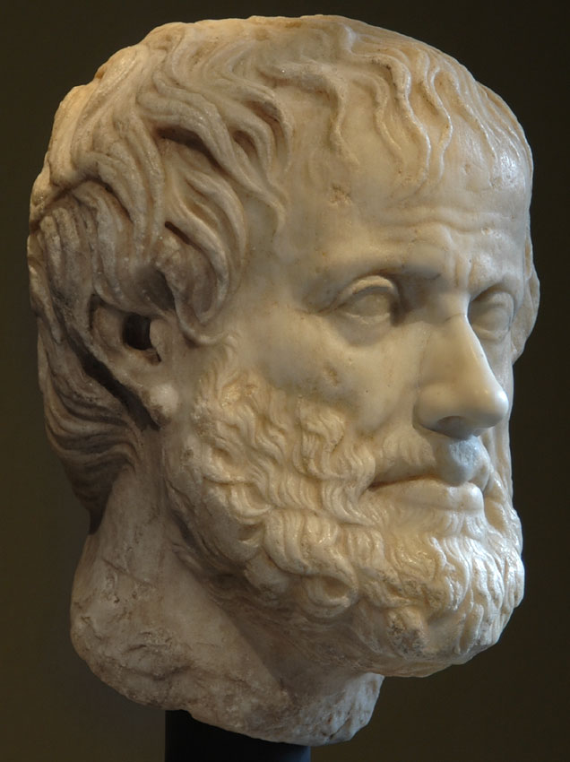
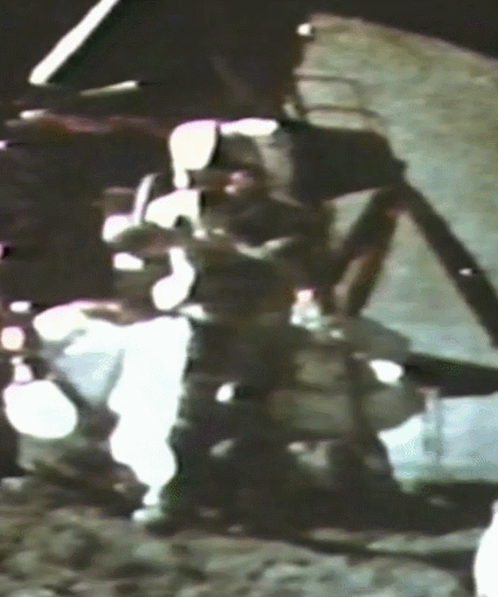

B1 Overview
You have now seen the kinematic equations: \(v = v_0 + at\), \(x = x_0 + v_0 t + \tfrac{1}{2}at^2\), and the rest. They are powerful tools. But where do they come from? The mathematics was established in medieval Oxford (see Side Quest A). The question that occupied Galileo Galilei (1564–1642) was different: Does any real physical motion actually follow these equations?
Galileo's great discovery — made experimentally on inclined planes in Padua around 1604 — was that freely falling bodies do precisely that. He confirmed it not by dropping weights from towers (the famous story is almost certainly apocryphal) but through a careful series of quantitative experiments that produced two striking regularities: the law of odd numbers and the law of squares. Both are direct consequences of constant acceleration, and together they are equivalent to the kinematic equations.
B2 Aristotle's Theory of Fall

Roman copy of Greek original
National Museum, Rome. Public domain.
For nearly two thousand years, the authoritative account of why objects fall was Aristotle's. In his Physics and De Caelo (4th century BC), Aristotle argued:
- Natural motion. Each of the four elements — earth, water, air, fire — has a natural place in the cosmos. Earth is heaviest and seeks the center; fire is lightest and rises. Falling is "natural motion" for earthly objects: they fall because their nature draws them toward their natural place.
- Speed proportional to weight. A heavier body (more "earth") has a stronger pull toward its natural place and therefore falls faster. Aristotle claimed that the speed of fall is proportional to the weight of the body.
- Speed inversely proportional to medium resistance. In a denser medium (water vs. air), fall is slower; in a vacuum it would be instantaneous — which Aristotle considered absurd, and therefore used as an argument against the existence of a vacuum.
In mathematical form, Aristotle's law of fall can be written \(v \propto W/R\), where \(W\) is weight and \(R\) is the resistance of the medium. This is not a constant-acceleration model; it is a constant-velocity model — each object falls at a fixed terminal speed determined by its weight.
Despite occasional critics — John Philoponus (6th century AD) noted that objects of very different weights fall at nearly the same speed — Aristotle's account remained standard teaching in European universities until Galileo's work.
B3 Galileo Challenges the Tradition

Justus Sustermans, 1636
Uffizi Gallery, Florence. Public domain.
Galileo Galilei was born in Pisa in 1564 and died in Arcetri in 1642 — the year Isaac Newton was born. He taught mathematics in Padua from 1592 to 1610, and it was during this period that he carried out his fundamental work on motion.
The methodological shift
Galileo's most important innovation was not a single discovery but a method. He insisted on treating physical questions mathematically and then checking the mathematics experimentally. This seems obvious now; in 1600 it was a departure from Aristotelian natural philosophy, in which mathematics was a tool for astronomy but not for physics.
Galileo argued in his Two New Sciences (1638) that the correct question was not "why does this body fall?" (a metaphysical question about causes) but "how does it fall?" — a mathematical question about the relationship between distance and time.
Challenging the weight argument
Galileo attacked Aristotle's weight-proportionality claim with a thought experiment:
"If we take two bodies whose natural speeds are different, it is clear that on uniting the two, the more rapid one will be partly retarded by the slower, and the slower will be somewhat hastened by the swifter. … [But] the combination of two bodies is heavier than either alone, and should therefore fall faster — a contradiction."
— Galileo, Two New Sciences, First Day
The argument: tie a heavy stone to a light one. By Aristotle, the combination is heavier, so it should fall faster than the heavy stone alone. But the light stone is a retarder, so the combination should also fall slower. The contradiction implies that Aristotle's proportionality must be wrong. The simplest resolution is that all bodies (in the absence of air resistance) fall at the same speed.
The rival that came before: Leonardo da Vinci
Aristotle was not Galileo's only predecessor. About a century before Galileo, Leonardo da Vinci also studied falling bodies and asked exactly the right question: how far does a body fall in successive equal intervals of time? His answer was almost right.
Da Vinci proposed that the distances follow the integers — 1 unit in the first interval, 2 in the second, 3 in the third, and so on:
Galileo's result — confirmed by experiment — was the odd numbers:
Both theories agree that later intervals cover more distance than earlier ones, so neither matches Aristotle's picture of constant speed. But only Galileo's is consistent with constant acceleration. Da Vinci's integer rule implies that the total distance after \(n\) intervals is \(\tfrac{n(n+1)}{2}\) — not proportional to \(n^2\). Galileo's odd-number rule gives a total of \(n^2\), which is the law of squares and the fingerprint of constant acceleration. The distinction is subtle enough that a brilliant observer without rigorous timing could easily miss it.
B4 The Inclined Plane Experiment
Free fall is fast. A ball dropped from 2 metres takes only 0.64 seconds to hit the ground. With the timekeeping available to Galileo (water clocks, music beats, pulse), accurately measuring intervals shorter than about half a second was nearly impossible for vertical fall. Galileo's solution was to slow the motion down while preserving its essential character.
The setup
Galileo constructed a long, smooth wooden groove on an inclined board. He released a hard bronze ball from rest at the top and measured the distance traveled in successive equal time intervals. By inclining the plane at a small angle \(\theta\), the effective acceleration along the plane is:
For a gentle incline (\(\theta \approx 3^\circ\)), \(\sin 3° \approx 0.052\) and \(a_{\text{plane}} \approx 0.51\ \mathrm{m/s^2}\) — about \(g/19\). The motion is slow enough to time accurately, but the form of the motion (constant acceleration) is identical to free fall.
Figure B4.1 — Ball positions on an inclined plane at equal time intervals. The gaps between successive positions grow as \(1:3:5:7:\ldots\) — the law of odd numbers. Total distances from the start grow as \(1:4:9:16:\ldots\) — the law of squares.
Galileo's timing method
Galileo used a water clock: a large vessel with a hole, collecting the outflow in a cup. The mass of water collected was proportional to time elapsed. He also used musical pulse — tapping out equal beats while the ball rolled, then adjusting the positions of small gut strings across the groove so the ball would click against them at each beat. If the clicks were perfectly even, the positions marked equal time intervals.
Both methods were ingenious and, for their era, surprisingly precise. Galileo reported experimental agreement with the theoretical ratios to within about 1 part in 10.
B5 The Law of Odd Numbers
Galileo's key experimental finding was this: when a ball rolls from rest on an inclined plane, the distances covered in successive equal time intervals are in the ratio \(1 : 3 : 5 : 7 : \ldots\)
Call the distance covered in the first interval \(d\). Then:
| Time interval | Distance covered in that interval | Odd number |
|---|---|---|
| 1st interval (0 → \(\tau\)) | \(d\) | 1 |
| 2nd interval (\(\tau\) → \(2\tau\)) | \(3d\) | 3 |
| 3rd interval (\(2\tau\) → \(3\tau\)) | \(5d\) | 5 |
| 4th interval (\(3\tau\) → \(4\tau\)) | \(7d\) | 7 |
| \(n\)-th interval | \((2n-1)d\) | \(2n-1\) |
The gap distances are the odd numbers multiplied by \(d\). Galileo documented this result in Two New Sciences (1638) and considered it the decisive experimental signature of constant acceleration.
B6 The Law of Squares
If you add up the distances in the law of odd numbers, you find the total distance traveled from the starting point after \(n\) intervals:
Since \(t = n\tau\), we have \(n = t/\tau\), and therefore:
The distance from the starting point grows as the square of the elapsed time. This is the law of squares — the most compact statement of Galileo's discovery about free fall.
| Time elapsed (\(n\) intervals) | Total distance from start | Ratio to first-interval distance |
|---|---|---|
| \(t = \tau\) | \(d\) | \(1 = 1^2\) |
| \(t = 2\tau\) | \(4d\) | \(4 = 2^2\) |
| \(t = 3\tau\) | \(9d\) | \(9 = 3^2\) |
| \(t = 4\tau\) | \(16d\) | \(16 = 4^2\) |
| \(t = n\tau\) | \(n^2 d\) | \(n^2\) |
Galileo stated this as a theorem in Two New Sciences: "The spaces described by a body falling from rest with a uniformly accelerated motion are to each other as the squares of the time-intervals employed in traversing these distances."
B7 Deriving Both Laws from \(a = \text{const}\)
Both Galileo's experimental results follow logically and inevitably from the single assumption \(a = \text{const}\). Here is the derivation.
Setup
Let the ball start from rest at \(t = 0\): \(v_0 = 0\), \(x_0 = 0\). The acceleration is a constant \(a\) along the plane.
Position at any time
Deriving the law of squares
After \(n\) equal time intervals of duration \(\tau\), the total elapsed time is \(t = n\tau\):
Calling \(d = \tfrac{1}{2}a\tau^2\) (the distance in the first interval, as we will show), we get \(x(n\tau) = d\cdot n^2\). Distance from start is proportional to \(n^2\) — the law of squares. ✓
Deriving the law of odd numbers
The distance covered in the \(n\)-th interval (from \(t = (n-1)\tau\) to \(t = n\tau\)):
Expanding: \(n^2 - (n-1)^2 = n^2 - n^2 + 2n - 1 = 2n - 1\). Therefore:
For \(n = 1, 2, 3, 4, \ldots\), the intervals are \(d, 3d, 5d, 7d, \ldots\) — the odd multiples of \(d\). The law of odd numbers. ✓
Worked Example B7.1 — Reading Galileo's Experiment
Suppose Galileo observes that in the first 1-second interval his ball travels \(d = 0.08\ \mathrm{m}\) on his inclined plane. What is the acceleration? Where is the ball after 4 intervals? What is the 4th-interval gap?
Figure B7.1 — Plotting distance \(x\) against \(t^2\) gives a straight line through the origin. This linearity is the experimental signature of constant acceleration: if \(x \propto t^2\), then \(a = \text{const}\).
B8 From Galileo's Laws to the Kinematic Equations
Galileo's law of squares is the equation \(x = \tfrac{1}{2}at^2\) (for \(v_0 = 0\)). Together with the definition \(v = at\), this gives us two of the four kinematic equations of Lesson 2. The other two follow by elimination — no new physics required.
| Equation | Modern form | Galilean origin |
|---|---|---|
| (1) | \(v = v_0 + at\) | Definition of constant acceleration; velocity grows linearly with time. |
| (2) | \(x = x_0 + v_0 t + \tfrac{1}{2}at^2\) | Law of squares (for \(v_0=0\): \(x \propto t^2\)); mean speed theorem for general case. |
| (3) | \(v^2 = v_0^2 + 2a\Delta x\) | Eliminate \(t\) between (1) and (2); also Galileo's result connecting speed to distance. |
| (4) | \(x = x_0 + \tfrac{1}{2}(v_0+v)t\) | Mean speed theorem: displacement = mean speed × time (Merton, c. 1335). |
Galileo did not write these equations in modern algebraic notation — he worked with proportions and geometric ratios, in the Euclidean tradition. The compact algebraic forms were systematized by Newton and his contemporaries in the latter half of the 17th century.
B9 Historical Legacy
The long chain
The following chain led from Aristotle's theory of fall to the modern kinematic equations:
- 4th c. BC: Aristotle — speed proportional to weight; velocity constant during fall.
- c. 1335: Heytesbury (Merton College) — mean speed theorem; mathematics of uniform acceleration.
- c. 1350: Oresme (Paris) — geometric proof; \(v\)–\(t\) diagram; area = displacement.
- 1555: Domingo de Soto — suggests free fall is uniformly accelerated.
- c. 1604: Galileo — inclined-plane experiments; law of odd numbers and law of squares confirmed.
- 1638: Galileo publishes Two New Sciences — the first modern textbook of mechanics.
- 1687: Newton — explains why objects fall with constant acceleration: gravitational force and \(F = ma\).
Confirmed on the Moon: Apollo 15 (1971)
On 2 August 1971, astronaut David Scott stood on the surface of the Moon and held a geologic hammer in one hand and a falcon feather in the other. The Moon has no atmosphere, so there is no air resistance — exactly the vacuum condition Galileo could imagine but never produce. Scott released both objects simultaneously and both hit the lunar surface at the same instant.
"Well, in my left hand I have a feather; in my right hand, a hammer. And I guess one of the reasons we got here today was because of a gentleman named Galileo, a long time ago, who made a rather significant discovery about falling objects in gravity fields. … How about that! Well, I'll be darned. It looks as if Mr. Galileo was correct in his findings."
— David Scott, Apollo 15 commander, lunar surface, 2 August 1971

Apollo 15, 2 August 1971. Astronaut David Scott releases a geologic hammer (right hand) and a falcon feather (left hand) on the airless lunar surface. Both strike the ground simultaneously. Credit: NASA / public domain.
The experiment was broadcast live on Earth. It is the only physics demonstration ever performed on another world, and it confirmed a result first proved by logical argument in medieval Oxford and by inclined-plane experiment in Galileo's Padua.
Galileo's methodological legacy
Perhaps more important than any specific result was Galileo's method:
- Idealization. Ignore air resistance, friction, and other complicating factors to find the idealized mathematical law. Real experiments are approximations to an ideal.
- Quantification. Measure everything. The ratio \(1:3:5:7\) is meaningful; "the ball goes faster" is not.
- Mathematical prediction followed by experimental test. Derive a consequence, measure it, compare. This is still how experimental physics works.
A simple calculation with a long history
The next time you solve a free-fall problem — a ball dropped from a building, a rock thrown upward, a car braking to a stop — you are completing a chain of reasoning that runs from Merton College in the 1330s through Galileo's Padua laboratory in 1604 to Newton's Principia in 1687 and your textbook today. The equation \(x = \tfrac{1}{2}gt^2\) is not just a formula. It is seven centuries of human thought made compact.
Glossary
- Law of Odd Numbers
- The empirical observation (Galileo, c. 1604) that the distances covered by a body accelerating uniformly from rest in successive equal time intervals are in the ratio \(1:3:5:7:\ldots\). Equivalent to the law of squares and to constant acceleration.
- Law of Squares
- The empirical observation (Galileo, c. 1604) that the total distance from the starting point grows as the square of the elapsed time: \(x \propto t^2\). Equivalent to the law of odd numbers and to \(x = \tfrac{1}{2}at^2\).
- Inclined plane experiment
- Galileo's experimental apparatus: a long smooth groove on an inclined board. By choosing a small angle of inclination, the effective acceleration \(a = g\sin\theta\) is small enough to time accurately while preserving the constant-acceleration character of free fall.
- Natural motion (Aristotle)
- In Aristotelian physics, the spontaneous motion of an object toward its natural place in the cosmos (earth downward, fire upward). Contrasted with violent motion (motion produced by an external force). The framework within which Aristotle's speed-proportional-to-weight rule was embedded.
- Galileo's method
- The combination of mathematical idealization, quantitative measurement, and experimental testing of mathematical predictions. Distinguished from both pure Aristotelian reasoning (observation without measurement) and pure Platonic mathematics (mathematics without experimental check).
- Two New Sciences
- Galileo's 1638 book (Discorsi e Dimostrazioni Matematiche intorno a due nuove scienze), published in Leiden after his condemnation by the Inquisition. The "two sciences" are the science of materials (strength of structures) and the science of local motion (kinematics). The latter contains the laws of odd numbers, the law of squares, and the projectile parabola.